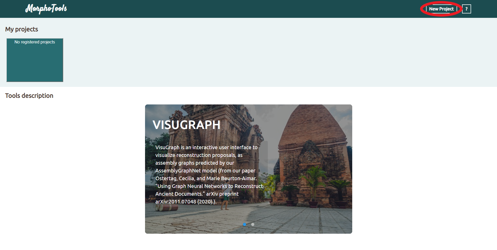
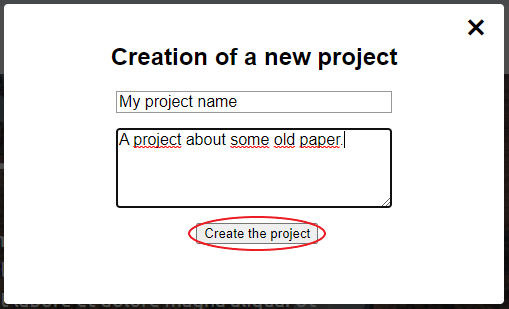
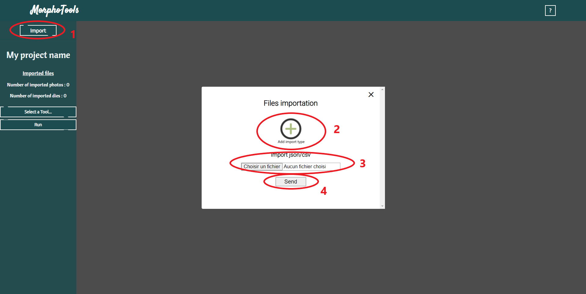
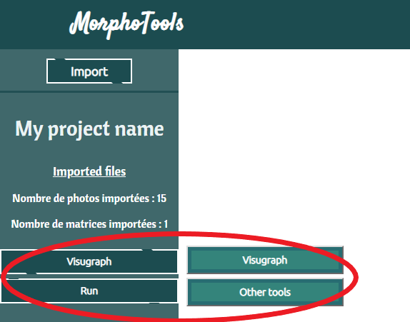
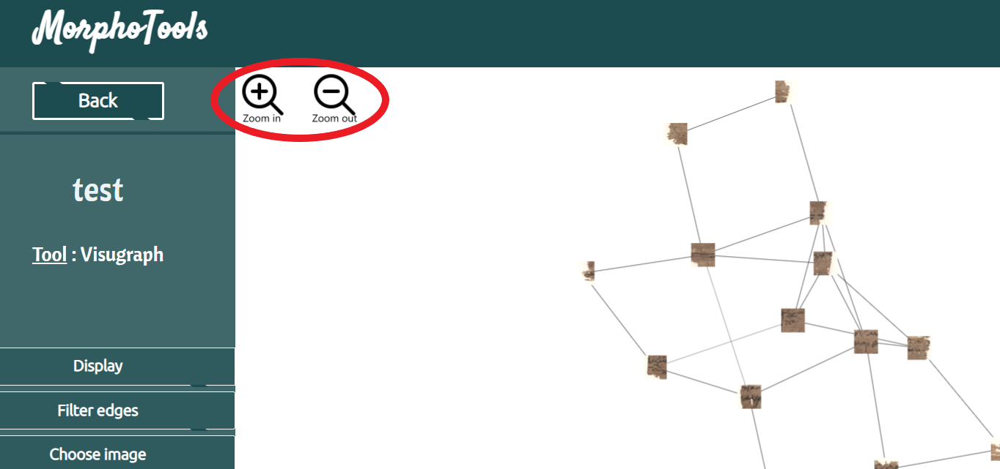
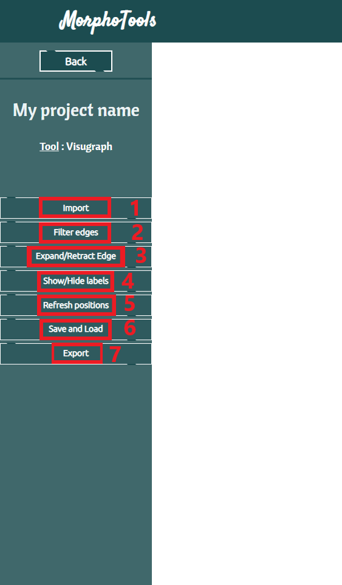
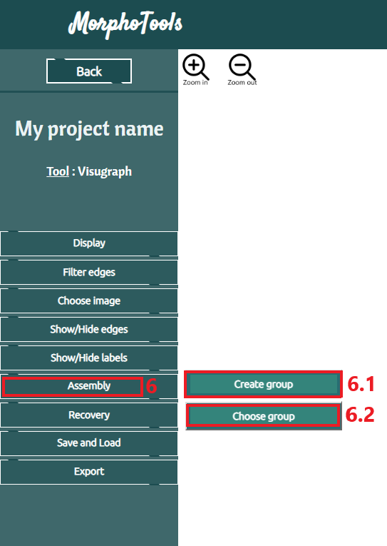
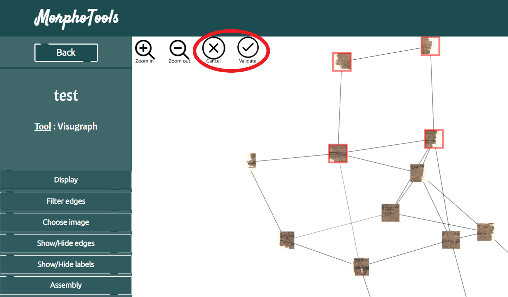

Welcome in the Morphotools help page. You will find here all the information about how to use MorphoTools and its several functionnalities.
Short Morphotools and Visugraph demonstration
I. Project Management :
In order to create your first project, you need to click "New Project". Then enter your project name (witch is mandatory) and your project description.
You can now manage your projects just by clicking on them.

Entering in the project creation menu

Project validation
II. Files importation and Tool selection :
When you select a project (here My project name), you will have a new page. On this new page you will first find a button "Import" (1).
Then you will have to select your images (png, jpg, ...) and your matrice (json or csv) (2).
Once all your files are selected, you can send them by clicking the "Send" button (3).

Files importation
With your files selected, you can choose the tool you want to use and click run.

Tool selection
III. Visugraph tools :
Most of Visugraph functionnalities can be find on the left part of the screen.
Some of them will reveal other buttons on the top-left of the visugraph window like the zoom in and the zoom out buttons.

Additional zoom buttons

Visugraph options
(1) Display : Select a display style and use it for imported images. (2) Filter edges : Enter a new threshold and use it to remove edges that have a lower similarity. (3) Choose image : Display the list of loaded image in order to make a selection. Not selected images will be remove from the graph. (4) Show / Hide Edges : Default setting = retracted. When Expanded, show edges and their legend. (5) Show / hide labels : If edges are expanded, show edges label. (6) Assembly : Allow the creation and management of nodes groups.

Assembly options(6.1) Assembly - Select group : Allow group creation by creating a group before displaying your graph (choose image in a list) or by clicking nodes if the graph is displayed. When all the wanted nodes are selected, you can validate your choice and give it a name.
When you want to display one or multiple groups, you can click "Choose group".

Group Validation(6.2) Assembly - Choose group : Display the group list. For each group, you can delete it (A), select it (B), display the group node list (C) and choose the group background color (D).
Group selection(7) Recovery : Compute the nodes most likely position. (8) Save / Load : Quick save of the actual nodes position. Or quick load of the latest saved nodes position. You can also save the nodes actual position and all imported files. (9) Export : Export JPG for exporting the jpg without cytoscape (edges and labels are not displayed). Export JPG with cy for a jpg image including edges and labels.
Export JSON to download a json with the actual position for each nodes (can be load as a matrix during the importaion json/csv step).